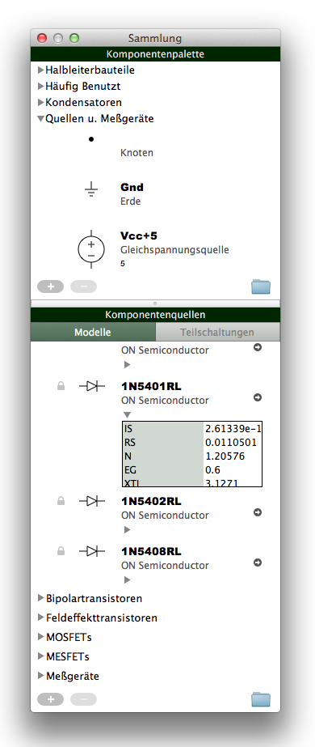

Die Komponentensammlung ist in einem getrennten Fenster untergebracht und
in Bereiche für Komponentenmodelle, Komponentengruppen und
Teilschaltungen unterteilt. Das Fenster kann durch das Hauptmenü,
"Fenster" → "Komponentensammlung", oder aus dem Menü in der
Palettenleiste ("Bearbeiten...") geöffnet werden.
Abb. 1: Komponentensammlung

Modelle
Volta Komponentenmodelle definieren Klassen von Komponenten, ähnlich wie
SPICE-Modelle. In Volta werden allerdings auch nichtelektrische Diagrammelemente
durch Komponentenmodelle abgedeckt. Ein Volta Komponentenmodell enthält
die gemeinsamen Eigenschaften der von Ihr definierten Klasse: Das Aussehen,
die Anschlußpunkte und die Modellparameter.
Alle Komponentenmodelle sind im Bereich "Modelle" aufgelistet. Modelle
sind nach Typ (Widerstand, Diode, MOSFET usw.) gruppiert. Jedes Modell
besitzt einen Namen. Einige besitzen zusätzlich eine Herstellerkennung die
zur Unterscheidung von Modellen mit gleichem Namen dient. Besonders
nützlich ist die Herstellerkennung wenn man selbsterstellte Modelle an
andere Benutzer weitergibt. Als Herstellerkennung können Sie, z.B.,
Ihren Namen oder Ihre Email-Adresse verwenden.
Komponentenmodelle können in die Komponentenpalette oder direkt in ein
Diagrammfeld gezogen werden. Dabei werden Komponenten mit
Standardwerten erzeugt und eingefügt.
Teilschaltungen
In der Komponentensammlung sind Teilschaltungen spezielle
Komponentenmodelle die Volta Teilschaltungsdokumente repräsentieren.
Volta Teilschaltungen enthalten jeweils eine SPICE Teilschaltung,
die entweder aus einem Diagramm erfasst oder manuell eingetragen wurde.
Beim Erfassen eines Diagramms, worin Volta Teilschaltungen verwendet werden,
werden die enthaltenen SPICE Teilschaltungen in die erzeugte Netlist eingefügt.
Während Komponentenmodelle und Komponenten direkt in der
Komponentensammlung bearbeitet werden können muss man bei einer
Teilschaltung das entsprechende Volta-Dokument öffnen.
Das kann man entweder mit einem Doppelklick oder mit dem Knopf
 .
Volta aktualisiert die Komponentensammlung sobald eine bearbeitete
Teilschaltung gespeichert wird.
.
Volta aktualisiert die Komponentensammlung sobald eine bearbeitete
Teilschaltung gespeichert wird.
Teilschaltungen können in die Komponentenpalette oder direkt in ein
Diagrammfeld gezogen werden.
Palette
Die Komponentenpalette enthält benutzerdefinierte Gruppen von
Schaltungskomponenten (oder anderen Diagrammelementen).
Palettengruppen können erstellt  ,
umbenannt und entfernt
,
umbenannt und entfernt  werden. Komponenten können einer Palettengruppe hinzugefügt, umbenannt und
entfernt werden.
Palettengruppen müssen unterschiedliche Namen haben. Komponenten müssen
innerhalb Ihrer Gruppe unterschiedliche Namen haben.
werden. Komponenten können einer Palettengruppe hinzugefügt, umbenannt und
entfernt werden.
Palettengruppen müssen unterschiedliche Namen haben. Komponenten müssen
innerhalb Ihrer Gruppe unterschiedliche Namen haben.
Palettengruppen können befüllt werden indem man Komponentenmodelle,
Teilschaltungen oder Komponenten aus anderen Palettengruppen reinzieht.
Im letzteren Fall werden Kopien der Ursprungskomponenten angelegt.
Dateien
Ausgenommen der eingebauten Modelle wird der Inhalt der Komponentensammlung
in leicht zugänglichen Volta-Dateien aufbewahrt.
Komponentenmodelle, Palettengruppen und Teilschaltungen werden aus
Unterverzeichnissen ("Models", "Palette" und "Subcircuits") des
Hauptverzeichnisses der Komponentensammlung geladen und dort wieder gespeichert.
Durch weitergeben der Volta-Dateien kann man die eigene Komponentensammlung
mit anderen Benutzern teilen. Bitte beachten Sie dabei eventuelle Urheberrechte.
Volta aktualisiert die Komponentensammlung automatisch sobald neue Dateien
in den oben genannten Verzeichnissen abgelegt werden.
Lokal oder auf iCloud
Das Hauptverzeichnis der Komponentensammlung kann sich entweder lokal auf
Ihrem Mac oder auf iCloud befinden. Sie können Ihre lokale Komponentensammlung
jederzeit nach iCloud kopieren und auf die iCloud-Komponentensammlung umschalten.
Die Vorteile der iCloud-Komponentensammlung sind: Eine Online-Sicherheitskopie
und automatische Synchronisierung zwischen mehreren Installationen von
Volta. Der Nachteil ist das Risiko von Datenverlust im Falle einer Synchronisierung
von zwei Komponentensammlungen die seit der letzten Synchronisierung
unabhängig voneinander modifiziert wurden.
Während Sie die iCloud-Komponentensammlung benutzen werden keine Änderungen
an Ihrer lokalen Komponentensammlung gemacht. Sie können jederzeit auf die
lokale Komponentensammlung zurückschalten. Es ist auch möglich den Inhalt der
lokalen Komponentensammlung in die iCloud-Komponentensammlung (oder umgekehrt)
zu kopieren ohne umzuschalten.
Das Umschalten zwischen den beiden Komponentensammlungen und das Kopieren der
Inhalte wird über das Hauptmenü, unter "Volta" → "iCloud Komponentensammlung",
getätigt.
Das Hauptverzeichnis der lokalen Komponentensammlung befindet sich in
"~/Library/Containers/com.kulfx.Volta/Data/Library/Application Support/Volta",
worin "~" für das Home-Verzeichnis des Benutzers steht.
Zugriff vom Fenster der Komponentensammlung
Für jeden Inhaltstyp (Modell, Palette, Teilschaltung) gibt es einen Knopf
im Fenster der Komponentensammlung der die Dateien des entsprechenden
Verzeichnisses sichtbar macht. Wenn Sie die lokale Komponentensammlung
benutzen sehen die Knöpfe wie ein Ordner
 aus und die Dateien werden im Finder präsentiert. Wenn Sie die
iCloud-Komponentensammlung benutzen sehen die Knöpfe wie eine Wolke
aus und die Dateien werden im Finder präsentiert. Wenn Sie die
iCloud-Komponentensammlung benutzen sehen die Knöpfe wie eine Wolke
 aus und die Dateien werden in Voltas eigener Dateiansicht präsentiert.
aus und die Dateien werden in Voltas eigener Dateiansicht präsentiert.
Benutzerdefinierte Komponentenmodelle
Benutzerdefinierte Komponentenmodelle (die man durch kopieren existierender
Modelle erstellen kann) werden ausschließlich in der Datei "CustomModels.volta"
abgelegt. Andere Dateien, aus denen Komponentenmodelle geladen wurden,
werden von Volta nicht modifiziert. Dementsprechend gibt es in der
Komponentensammlung mit einem Schloßsymbol versehene Modelle die nicht
bearbeitet werden können.
SPICE Modell-Dateien
Volta kann Komponentenmodelle auch aus SPICE lib-Dateien laden.
Dazu müssen die lib-Dateien im Unterverzeichnis "Models"
abgelegt werden und die enthaltenen SPICE-Modelle müssen im folgenden Format
lesbar sein:
.MODEL <Modellname> <Modelltyp>
+param1=value1 param2=value2
+param3=value3 param4=value4
...
Es dürfen keine Leerzeichen links oder rechts vom Gleichheitszeichen (=) stehen.
Kommentarzeilen, die mit Stern (*) anfangen, können überall eingefügt werden.
{kind=link}
{kind=link}